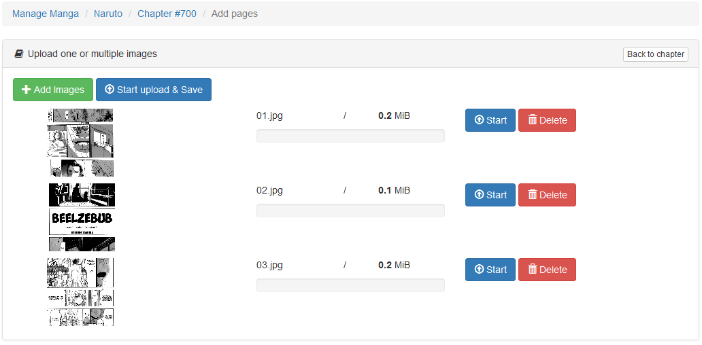

my Manga Reader CMS
- created: 07/20/2015
- latest update: 03/09/2016
- by: cyberziko
- themeforest.net/user/cyberziko
- email me from the support page
Intro
Have You always wanted to have your "Manga Reader" like mangapanda and mangafox, this CMS is the easiest, fastest and intuitive way to create yours.
You can easily set up this CMS just by following several steps provided on the Instruction page, and start creating your Manga chapters.
FEATURES
- Easy setup (about 30 seconds, input then done, no hand-setup need).
- Search engines friendly (SEO optimized): auto generated meta tags, generated sitemap for Search Engin, integration of Google Analytics and Google Webmaster.
- Crawler/scrapper engine: automatically get scans from other Manga websites.
- 13 Themes.
- Voting System.
- Responsive design: Manga page auto fit with device, comfortable for user to read on smaller devices.
Updates
How-to (applicable for version >= 1.4)
- Unzip the ZIP file updates/update{SCRIPT-VERSION}.zip:
- You need to execute the SQL script: {extraction_folder}/updates-v{SCRIPT-VERSION}.sql to do this see "How-to of 'Update to 1.2' first point"
- After that, via your FTP client copy the content of the folder {extraction_folder}/update/ (contains only the changed files) in root folder of your website, the new files will replace the old ones. /!\ Be careful to not overwrite your changes.
- If you have your own language file, copy from lines marked with {SCRIPT-VERSION} to end, then translate them.
- Contact me if you do not understand the procedure of updating.
v1.9 features
- Choose your reader mode: reload pages/or not
- Choose your storage mode: Local server, Copy URLs, Google Drive
- Built-in comment system
- Adding tags to Manga + Widget
- Bulk chapters/pages deletion
- Adding Captcha to all public forms
- Next/Previous chapter links in reader page
- Show by volume in colorful theme
- Fix bugs
v1.8 features
- Public user profil page + add avatar
- Advanced SEO
- Advanced Search (Activate in general/menu)
- Filter by Author & Categories from Manga Info page
- Add Widgets to FrontPage: Top by views, custom codes, ...
- Replace broken Spanish scraper
- Script optimization: Cache chapters (configured in settings), ...
Update to 1.7
This section is only for people who have already installed the v1.6. For a new installation skip to the next section.
New features
- Notification of updated bookmarked Manga (Read documentation)
- Adding Articles
- Adding comic types & artist in Manga creation
- Comment system: Facebook & Disqus
- French & Indonisian scraper
- Italian Language (tnx to Araragi for the trad)
- Auto get info & bulk scraper for other languages
- Move/Re-order pages of a chapter
- More options (General & Manga Option Menu): show by volume, edit menu, pagination, Reader default mode
- latest release & news page
- Feed at domain.com/feed
- Report broken page
- Contact us page
- Script optimization: Caching & Reader (no load of all the site)
- Fix bugs
How-to
- Unzip the ZIP file updates/update1.7.zip:
- You need to execute the SQL script: {extraction_folder}/updates-v1_7.sql to do this see "How-to of 'Update to 1.2' first point"
- After that, via your FTP client copy the content of the folder {extraction_folder}/update/ (contains only the changed files) in root folder of your website, the new files will replace the old ones. /!\ Be careful to not overwrite your changes.
- If you have your own language file, copy lines from 369 to end, then translate them.
- Contact me if you do not understand the procedure of updating.
Update to 1.6
This section is only for people who have already installed the v1.5. For a new installation skip to the next section.
New features
- Download all chapters at once click from mangapanda.com & mangareader.net (stop/resume options)
- Manage Ads / Ads placement
- Add mangareader.net scraper
- Add comicvn.net (Vietnam) scraper
- Download chapters as ZIP from Manga Info Page
How-to
- Unzip the ZIP file updates/update1.6.zip:
- You need to execute the SQL script: {extraction_folder}/updates-v1_6.sql to do this see "How-to of 'Update to 1.2' first point"
- After that, via your FTP client copy the content of the folder {extraction_folder}/update/ (contains only the changed files) in root folder of your website, the new files will replace the old ones. /!\ Be careful to not overwrite your changes.
- If you have your own language file, copy lines 183 to 200 then translate them.
- Contact me if you do not understand the procedure of updating.
Update to 1.5
This section is only for people who have already installed the v1.4. For a new installation skip to the next section.
New features
- Bookmarking system
- Auto get Info from Mangapanda on creation process
- Improve the Reader (easily navigate between chapters)
How-to
- Unzip the ZIP file updates/update1.5.zip:
- You need to execute the SQL script: {extraction_folder}/updates-v1_5.sql to do this see "How-to of 'Update to 1.2' first point"
- After that, via your FTP client copy the content of the folder {extraction_folder}/update/ (contains only the changed files) in root folder of your website, the new files will replace the old ones. /!\ Be careful to not overwrite your changes.
- If you have your own language file, copy lines 329 to 345 and line 271 then translate them.
- Contact me if you do not understand the procedure of updating.
Update to 1.4
This section is only for people who have already installed the v1.3. For a new installation skip to the next section.
New features
- Manga List (see list by image or text, filtring and sorting)
- Manga View Counter.
How-to
- Unzip the ZIP file updates/update1.4.zip:
-
You need to execute the SQL script: {extraction_folder}/updates-v1_4.sql to do this:
- go to your phpmyadmin
- select your database
- clic on the Tab 'SQL'
- paste the content of the script
- and execute, that's all :)
- After that, via your FTP client copy the content of the folder {extraction_folder}/update/ (contains only the changed files) in root folder of your website, the new files will replace the old ones. /!\ Be careful to not overwrite your changes.
- If you have your own language file, copy lines 289 to 294 and translate them.
- Contact me if you do not understand the procedure of updating.
Update to 1.3
This section is only for people who have already installed the v1.2. For a new installation skip to the next section.
This version fix some bugs after v1.2 update.
How-to
-
Please replace these existing files by the new ones:
- mymangacms_base/app/controllers/InstallerController.php (not necessary if you already installed the application or you have PHP 5.4)
- mymangacms_base/app/controllers/settings/SettingsController.php
- mymangacms_base/app/views/admin/manga/edit.blade.php
Update to 1.2
This section is only for people who have already installed the v1.1. For a new installation skip to the next section.
New features
- User Mangement System (see section: Administration: Users)
- Supporting RTL orientation for language like Arabic.
- Adding Arabic language.
- Bulk chapters grabber.
- Create chapter pointing to external images.
- Changing the reading mode of a chapter (Page by Page / All in one Page).
- Automatic creation of a chapter (name and images).
- Flag violent Manga.
How-to
-
You need to execute the SQL script : updates/updates-v1_2.sql to do this:
- go to your phpmyadmin
- select your database
- clic on the Tab 'SQL'
- paste the content of the script
- and execute, that's all :)
- There are a lot of updates, you need to copy all the content of the upload folder, like a first install, but you need preserve your config file: mymangacms_base/app/config/config.inc.php and the uploads directory (it contains your images).
- Contact me if you do not understand the procedure of updating.
Update to v1.1
This section is only for people who have already installed the v1. For a new installation skip to the next section.
New features
- Supporting more languages: French and Spanish in addition to English. (see Language section)
- Add your own language. (see Language section)
- Random Manga button.
- Search Manga.
- Automatic creation of a chapter (name and images).
- New source for Automatic creation for Spanish people.
How-to
-
You need to execute the SQL script : updates/add_lang_option.sql to do this:
- go to your phpmyadmin
- select your database
- clic on the Tab 'SQL'
- paste the content of the script
- and execute, that's all :)
-
Now you will copy this new files:
- mymangacms_base/app/lang (folder)
- mymangacms_base/app/models (folder)
- mymangacms_base/app/controllers (folder)
- mymangacms_base/app/views (folder)
- mymangacms_base/app/breadcrumbs.php (file)
- mymangacms_base/app/routes.php (file)
- mymangacms_base/app/filters.php (file)
- css/colorful/style.css (file)
- js/vendor/jquery.autocomplete.min.js (file)
- Another alternative to the 'Step 2', is to copy all the content of the upload folder, like a first install, but you need preserve your config file: mymangacms_base/app/config/config.inc.php
- Contact me if you do not understand the procedure of updating.
Installation
Please follow these instructions to install the Manga Reader CMS:
- After Unziping the package, copy all files inside the 'upload' directory to your server.
-
In the browser navigate to your domain, ex: http://mydomain.com, you will be redirected automatically to the installation page, or directly navigate to http://mydomain.com/install
- Enter the parameters to connect to existing database.
- Then click on the 'Install' button, This will create the database tables.
-
After that, you will be invited to navigate to 'Administration Page' and change the default 'login/password' and start using your CMS (see next section).
Administration: Settings
Sign In to the Admin Dashboard
After your login you will get the 'Administration page':
User profil
To change login/password and the user informations, go to 'User Profile' page:
Theme
To change the theme of the frontpage, go to 'Settings > Theme':
There are 13 themes: 12 classic themes with color variation and one with a different representation

SEO
For the 'Search Engin Optimisation', enter/change the meta tags (title, keywords, description) content. This informations are displayed in the search engin result page
Also you can add only your 'Google Analytics ID' (ex: UA-XXX, get it from your GA Page) and the 'Google Webmaster ID' (ex: _XAD481C..., get it from your GW Page), and the script/tag will automatically added to your pages
General
Enter a presentation of your website. This informations are displayed in the Homepage
You can use some HTML tags in the description
Language
Change language
- To change the language of your website, go to Settings > General.
- If you want to change any text or message on the site, edit the file messages.php of your language in the folder: mymangacms_base/app/lang
Add a Language
If you want to add a new language:
-
Create a folder that has the name of your language code in the folder: mymangacms_base/app/lang
- example for the Italian language, the code is 'it', and my folder will be: mymangacms_base/app/lang/it
- Copy the file messages.php from the mymangacms_base/app/lang/en and paste it to your language folder.
- And start editing the messages.
- The new language will be automatically displayed in the list in Settings > General.
Administration: Manga
Create your first Manga step by step
To add new manga, click on 'Manage Manga > Manga List' menu then on the 'Create a new manga' button. Then you will be directed to a page that looks like this.
You have to fill out these fills for a new manga, here are explanations for all of them
- Manga Name (required)- Name of the Manga, ex: Naruto
- Slug (required, without spaces)- The name that will be used in the URL. must be unique and in lowercase, ex: for the slug naruto the url is: http://mydomain.com/manga/naruto
- Other names - Other name of the series, oftenly is the name in other language.
- Author(s) of the series, if there are more than one, seperate them with comma.
- Date of release year
- Status - Is it on going or completed?
- Categories one or many categories.
- Summary - Short description about the series.
- Image cover (recommended)- The cover of the series, you can use upload to your site through the upload button.
- Violent Content (default: No)- indicate if your Manga contains Violent images.
Here is an example:
After creating a Manga, you will be redirected to 'Manga list' page.
Now you can click the manga name to edit/delete it or add chapters.
Create a new Chapter
To add new chapter, click on the 'Create new chapter' button in the 'Manga info' page. Then you will be directed to a page that looks like this.
You have to fill out these fills for a new chapter, here are explanations for all of them
- Chapter Name (required)- Name of the Chapter, ex: Naruto Uzumaki!
- Number (required)- The chapter number, ex 700.
- Slug (required, numeric)- The number that will be used in the URL. must be unique for the same Manga, ex: for the slug 700 the url is: http://mydomain.com/manga/naruto/700
- Volume (numeric)- The volume.
Here is an example:
Another option is to create automatically your chapter and downloading all the chapter 'Images' from other site (actually, there is only mangapanda.com as english source, and TuManga for Spanish) and adding them to your website.
for example: if you want to grab the chapter 700 of Naruto, go to the chapter page on mangapanda.com, for this case : http://www.mangapanda.com/naruto/700 copy the URL and paste it on the textbox and click 'Start scraping.
You can add one or many URLs (one per line)to get them all by one click
After creating chapter with first option you will be redirected to the page of adding 'Pages/Scans'
Add Pages/Scan
Click on the 'Add Pages' button, you have three option for adding pages:
-
by uploading a 'ZIP file'. the zip must contain only images, like the one:
-
or by uploading 'Images'. you can choose one or multiple images to upload, and then click on "Start upload & save" button
 -
or by pointing to an external 'Images
Hot List
Select the Manga, you want to be displayed in the 'Hot Manga Updates' on the 'HomePage' (screenshot below).
Categories
On this page you can edit/add new manga category.
Administration: Users
Users
This page show all users of your website, you can add new user, edit an existing user or delete it.
- N°Manga, N°Chapters columns show the number of Manga, Chapters belongs to each user.
- Status: show if the account is activated or not.
If you delete a user, all his Manga, Chapters will be assigned to the Administrator.
Subscription Options
After the installation, you need to configure the subscription options in Manage Users > Users page:
- Allow users to subscribe to my website (default: No): if you want users to sign up (create an account) and access to the admin page with the default role defined bellow. If you activate this option you will see "Subscribe" button in the Homepage.
- The administrator need to activate it (default: No): the new created account need to be activated by the administrator.
- Send E-mail confirmation (default: No): the new created account need to be activated by the email confirmation.
- Default Role (default: Contributor): choose the default to be assigned to every new created account.
- Email address that will be displayed in the sent email: e.g. the admin email.
- The name that will be displayed in the sent email: e.g. Your website name.
- Use PHP Mail: is a PHP service for sending emails by default is allowed by most Hosting services.
-
Configure and SMTP server: configure an SMTP server if you have one. Your Gmail account is an example of a free SMTP server and can be used here, but you should allow Gmail to send emails from an exernal websites.
- host
- port
- username
- password
Add new user
In this page you need to fill login, password, email, assign roles and choose the status of the account.
Permissions
Here is the list of all available permissions.
Roles
There are three predefined roles and you can create your own role by adding one or many permissions.
Frontpage
This is how the frontpage looks like after adding our first Manga/Chapter:
-
Classic theme:

-
Colorful theme:
Manga Reader
This is how the manga reader looks like :
Notification System
Notifications are added to a queue to be processed later by a Cronjob.
Notifications are automatically added to the queue after manual creation of a chapter. For mode "Scraping," it must be done manually by clicking on the button displayed on the screen at the end of the treatment.
Here is the configuartion of Cronjob:
Select your periodicity of sending emails and after in command add this: PATH_TO_PHP_EXE PATH_TO_SCRIPT/mymangacms_base/artisan queue:work
e.g. /usr/local/bin/php /home.../public_html/.../mymangacms_base/artisan queue:work
You need also to update the file: ...\mymangacms_base\app\config\mail.php with you mail configuration:
- 'driver' => 'smtp',
- 'host' => 'yourhost',
- 'port' => port,
- 'encryption' => 'ssl',
- 'username' => 'youremail',
- 'password' => 'yourpwd',
- 'from' => array('address' => 'the address to show in the received email', 'name' => 'the name to show in the received email')
Maybe your server will block other mail services like GMAIL, then you can use an email created on your hosting plateform.
Thanks
Thank you for purchasing this application. If you have any questions that are beyond the scope of this help file, please feel free to email via my user page.
Your vote will be greatly appreciated!
Thanks so much!
:)